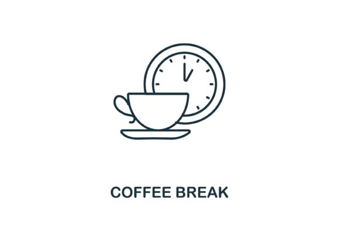

eza -aT my_projectmy_project
├── .python-version
├── main.py
├── pyproject.toml
├── README.md
└── uv.lockVersions, virtual env, and co with pip, pipx, pyenv, virtualenv uv
Marie-Hélène Burle
Content from the webinar slides for easier browsing.
Do not use uv on the Alliance clusters. This is for your local computer only.
Following is a recap of a good workflow on the Alliance clusters.
Use module.
List available Python versions:
Check how to load a particular version:
Load a particular version:
Create a Python virtual environment:
Activate it:
Update pip from wheel:
Use pip with --no-index to use wheels whenever possible:
List of commands and options:
List of options:
Man page:
(When you can’t change your workflow.)
You can add uv in front of your usual venv and pip commands.
This actually runs uv (and neither pip nor venv) so you get the speedup, but it keeps everything compatible.
With specific Python version:
By default, the virtual env is called .venv. If you don’t change its name, uv will use it automatically so you don’t need to source it.
From GitHub repo:
From requirements.txt or pyproject.toml files:
Missing Python versions are automatically installed when required.
Example:
If Python 3.12 is missing, uv will install it during the creation of this virtual env.
Python versions can also be installed explicitly:
Specific implementations (default is cpython):
View installed and available versions:
Uninstall Python version:
Noe that this is a lot more convenient than pyenv which requires the exact Python version number to uninstall (e.g. pyenv uninstall 3.10.6).
Initialized project `my-project` at `/home/marie/my_project`With specific Python version:
Customize which files get created:
my_project
├── .python-version
├── main.py
├── pyproject.toml
├── README.md
└── uv.lockYou need to cd into the project, then you can add dependencies:
This creates a virtual env called .venv and a uv.lock:
my_project
├── .python-version
├── main.py
├── pyproject.toml
├── README.md
└── uv.lockHere again, no need to source the virtual env as long as you use uv.
Gets populated automatically with dependencies:
[project]
name = "my-project"
version = "0.1.0"
description = "Add your description here"
readme = "README.md"
requires-python = ">=3.13"
dependencies = []Using CPython 3.13.7 interpreter at: /usr/bin/python3.13
Resolved 1 package in 0.53ms
my-project v0.1.0Using Python 3.12.10 environment at: /home/marie/.local/share/uv/python/cpython-3.12.10-linux-x86_64-gnu
Package Version
------- -------
pip 24.3.1Update all dependencies in lock file and virtual env:
Remove dependencies:

Installed Python 3.10.17 in 1.49sYes, uv brags about how fast it installs things… but it can!
Create virtual env:
Activate it:
Update pip:
Install package:
Create virtual env:
I am deleting my entire uv cache to make sure that I am not cheating in the comparison. You normally never do that since the cache prevents deduplication (saves space) and makes installations much faster.
Install package:
To use the virtual env, I can activate it but I can also access it directly by running commands preceded by uv run.
For instance, I can launch a JupyterLab with access to the project virtual env with:
or run a script with:
I needed to install a number of packages for a deep learning course with JAX, including Grain which still requires Python 3.12.
Following are the workflows with classic tools vs uv.
Install Python 3.12:
Create virtual env with Python 3.12 (requires identifying the path):
Activate it:
Update pip:
Install packages:
Automatically installs Python 3.12 if missing.
Much simpler.
Much (much!) faster.
Leaves me with a nice pyproject.toml file:
[project]
name = "jxai"
version = "0.1.0"
requires-python = ">=3.12"
dependencies = [
"datasets>=3.5.0",
"jax-ai-stack[grain]>=2025.2.5",
"matplotlib>=3.10.1",
"tqdm>=4.67.1",
"transformers>=4.50.3",
]and a uv.lock file that I can put under version control and share for reproducibility.
Python tools are packages used for convenience (e.g. linters, formatters) across projects, but not necessary for running your code.
They are commonly installed via your Linux distribution package manager, Homebrew, or pipx.
They can also be installed by uv:
Tools can even be used without installation (from a temporary install).
uvx is an alias for uv tool run.